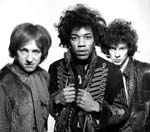
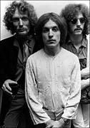
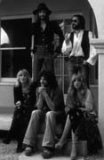
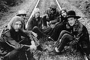
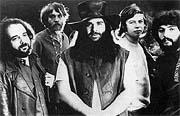
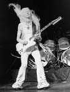
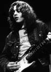
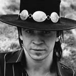
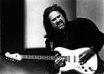

|
|
|
|

Всё началось в Англии, конечно, с Cream и Jimi Hendrix Experience в конце 1966 года.Бывший бас-гитарст The Rollins Stones Билл Вайман, написавший книжку о блюзе и находившийся внутри процесса, считает по-другому: блюз-рок стартовал в 1964 и оставался на гребне примерно 6 лет. При горячем желании к зачинателям БР можно отнести самих «роллингов», а также The Animals и The Yardbirds. Однако, положа руку на сердце, признаем, что в те времена они были взрывными поп-группами, идейно питающимися американским ритм-блюзом, либо бит-ансамблями, стремившимися петь блюз.

Блюз-рок создала гитара - гитара с громкостью на «десятку», её страшно агрессивный, «грязный» от перегрузки звук. Образец такого звука в формате трио Эрик Клэптон услышал на концерте Бадди Гая в Лондоне и замыслил пойти тем же путём. Cream лишь частично воплотил мечту первого «гитарного героя» о собственном блюз-трио: музыканты и сами не заметили, как вместо одного 100-ваттного комбика на сцене появилось 2, потом три, в конце концов - стена динамиков и усилителей. Явился новый стиль, основанный на гитарных риффах, импровизации, запредельной мощности и массовой аудитории.Вывезенный с исторической родины в Лондон и вступивший в игру одновременно с «Крим», Хендрикс поразил всех буйной фантазией в обращении с электрогитарой - для него не существовало правил и границ.
Как любое явление искусства, БР 1) пережил момент прорыва и бурного развития 2) достиг зенита 3) затем вступил в фазу загнивания. Будут также ривайвалы, и не раз.
В первый исторический отрезок, примерно три года, столицей БР оставался Лондон. Коллективы по рецепту «Крим» или в формате чикагских комбо здесь появлялись ежемесячно, распадались или перегруппировывались. Из этой круговерти поднимались настоящие «киты», будущие классики.

Главной группой традиционного чикагского блюза, плавно вкрутившей громкость на максимум, стала Fleetwood Mac. Когда говорят о его варианте 60-х, добавляют «при Питере Грине». «Мэк», в сущности, играли чистый чикагский блюз, однако хитами регулярно становились лирические вещи их выдающегося гитариста.Границы изначальной формулы БР постоянно расширялись, музыка усложнялась. Такие группы, как 10 Years After, Rory Gallagher и его The Taste, постоянно обновляющийся ансамбль гитариста Кима Симмондса Savoy Brown, Stan Webb и Chicken Shack, Free, голландский Livin' Blues, - все они достойны термина, изобретённого британским еженедельником New Musical Express - «прогрессивный блюз».
Процесс утяжеления звука БР, усложнения, синтез с другими стилями, в частности, с джазом, не миновал Америку. Тамошние историки выдвигают на роль первопроходцев БР харпера Пола Баттерфилда и гитариста Майкла Блумфилда. Судя по хронологии, они, хотя и успели прыгнуть в поезд, набирающий скорость, но никак не могли вести локомотив БР.
Апофеоз БР - на стыке десятилетий. Тут действительно американцы оказались молодцами, однако истинными лидерами остались британцы.
Еще один термин - «тяжелый блюз». В этой категории на недосягаемой вершине стиля - Led Zeppelin с двумя первыми альбомами. Все присущее БР было возведено ими в квадрат и помножено на сказочный талант каждого члена квартета.

В Штатах образовались свои ритм-блюзовые уникумы, ставшие в один ряд с «Лед Зеппелин». Группа The Allman Brothers Band играла ритм-блюз, чуть кантри и джаза, по замечанию солиста ансамбля Грегга Оллмана. Первые диски включали в себя очень зрелую музыку, однако истинная ценность группы, в состав которой входили два солирующих гитариста и два барабанщика, раскрывалась на концертах. Оллманы завораживали аудиторию, учиняя бесконечные джемы, когда в продолжительные экспромты пускались - по очереди или вместе - каждый из шести музыкантов. Это было мощно, непредсказуемо и красиво.
Другой полюс - традиционалистов - представляла группа Canned Heat. Возникшая, как богемное предприятие двух хиппи Аллана Вилсона и Боба Хайта, «Консервированная Жара» до сих пор исполняет самую простую разновидность блюз-рока - авторский вариант буги. С одной стороны это был «старый добрый блюз», но постоянно меняющая состав группа вкладывала в него столько энергии и фантазии, что ее трудно было упрекнуть в однообразии.
Символом американского БР сделался Johnny Winter - техасский блюзовый гитарист-альбинос. Феноменально одарённый он, начал выступать с братом Эдгаром ещё в школьные годы. Джонни сделался частью рок-эпоса, дебютантом подписав самый выгодный контракт в истории жанра с компанией Columbia. Конъюнктура вынудила Джонни сменить «чистый блюз» на стадионный блюз-рок, в котором он просуществовал, неуклонно двигаясь под воздействием наркотиков к саморазрушению, вплоть до середины 70-х.Пришли 70-е. Мировой рок рассыпался на массу субжанров, все завертелось быстрей, и прежний БР стремительно состарился. Правил балом теперь прогрессив-рок. Последовавшая пятилетка превратилась в сплошную битву БР за выживание. Кто-то пошел по тупиковой дороге, доводя ингредиенты стиля - громкость, бесконечные гитарные джемы - до абсурда. Эти попали в тупик и сошли на нет, как это случилось с группами типа Blue Cheer или Humble Pie. Другие оказались гибче и встроились в актуальные тенденции, например, Climax Blues Band или ритм-блюзовые рокеры из Детройта The J. Geils Band, по-прежнему собиравшие стадионы. Звезды 60-х частично сложили оружие, кто-то переориентировался, как это случилось с Эриком Бёрдоном, возглавившим калифорнийскую фанк-группу War.
Из всех наследников БР 60-х в модные выбился в начале 70-х совсем простенький вариант под названием boogie rock. Эту нишу заполнили, в частности, перебравшиеся в Штаты британцы - бывшие сотрудники Кима Симмонса, назвавшиеся Foghat, а затем и сам основатель «Савой Браун». В Америке буги-рок культивировали в Техасе. Тамошнее трио ZZ Top, пережившее пару апгрейдов, остаётся символов живучести буги-рока и сегодня. Буги-рок бодро дотянул до эпохи панка - до второй половины 70-х.

Hеплохо устроились блюз-рокеры, перековавшиеся в исполнителей тяжелого рока и хэви-металл. Так произошло, например, с группой Bad Company, успешно державшейся на плаву за счет нового стиля, композиций и блестящего блюзового вокалиста Пола Роджерса. Неподвластным конъюнктуре оказался ирландский виртуоз, фанатично преданный блюзу, Rory Gallagher. Он по-прежнему собирал полные залы, его альбомы остаются эталоном пасcионарности и изобретательности.К середине 70-х прежние кумиры БР либо завянут, либо переместятся на клубную сцену, покинув хит-парады, престижные площадки и радиоволны. Кто-то из них, скрывшись за стенами клубов, переживет второе рождение в 90-е, дотянет до сегодняшнего дня, подобно голландской Cuby and The Blizzards, английской The Groundhogs.
Не следует проходить мимо странного, антиэволюционного феномена, имеющего прямое отношение к БР - pub rock. Клубный вариант БР, опять же явившийся с Британских островов, как видно из названия. Затоваривание на рынке рока, утомительная помпа и банальность, сопровождавшая жанр, породили нечто вроде протеста внутри самой профессии. Паб-рок являлся дешевой, демократичной, но отнюдь не примитивной альтернативой опускающемуся старшему коллеге. Паб-рокеры напоминают по посылу панков с принципиальной оговоркой: они отлично владели инструментами, однако почему-то решили вернуться в прошлое - к корням ритм-блюза 50-60-х годов. Ключевая фигура паб-рока - группа Dr. Feelgood.
Вторая половина 70-х - совсем сумрачный период в жизни БР. Его загнали в угол равнодушие пресытившейся публики и злобные панки. Правда, в исторической блокаде БР случилась прореха. На самом исходе десятилетия и опять же в клубах Англии зафиксирована яркая вспышка БР. Спокойствие на погосте БР нарушили всего несколько групп. В их относительном успехе замешаны два взаимоисключающих обстоятельства - прививка от панка и умение сочинять дельную мелодию. Пример первого порядка - группа 9 Below Zero, переполненная выдающейся энергией и отличной игрой харпера. А сочетать высочайший профессионализм с хорошими мелодиями на этот раз получилось, так что на них обратила внимание публика, у коллектива с донельзя банальным названием - The Blues Band.
Жизнь БР будет по-прежнему теплиться в лондонских питейных заведениях и университетских городках, однако с наступлением 80-х следует переориентировать внимание на 180 градусов - на другую сторону Атлантики. Там происходило нечто вроде «точечного ренессанса блюза» - в Америке вспыхнуло несколько звезд. Они не породили общего подъема БР, однако каждая в отдельности считается явлением. Их имена - Robert Cray, Stevie Ray Vaughan, George Thorogood. Торогуд и по сию пору исполняет с успехом простой буги-рок, венцом которого стали его стадионные туры по США, участие в легендарном глобальном концерте «live aid» в 1985 году.

SRV вернул фэнам БР веру в пауэр-трио, то есть в тот формат, с которого начинался БР в 1966 году. Одновременно он породил схоластическую дискуссию на тему «Что такое БР, а что такое современный блюз?». Воэн не был причастен к ней, он продолжал играть на концертах в основном восхитительный традиционный блюз в том звуке, который казался ему подходящим. В следующий момент он мог легко перейти на язык Хендрикса, Элберта Коллинза или современного джаза.По зловещей аналогии с Хендриксом Стиви Рэй Воэн успел сделать всего четыре прижизненных альбома, прежде чем погиб в авиакатастрофе в августе 1990 года. Любая его пьеса заслуживает внимания - Стиви Рэй, без сомнения, был исполнителем-гением, хотя отнюдь не новатором.
«Второй блюзовый бум» первой половины 90-х принёс расцвет подзабытой музыки.
Для Европы и России символом прихода блюза в массы стал ирландец Gary Moore. Собиравший стадионы Мур делал традиционный электроблюз, однако посыл его был настолько агрессивен, а громкость так высока, что ирландца можно считать причастным к БР.

Истинными героями эпохи стали постоянно прибывающие «guitar slingers». При ближайшем рассмотрении многие оказывались экс-сайдменами «гигантов». Например, Coco Montoya, Walter Trout, James Solberg. Как бы не были хороши «новички», их саунд определили Hendrix и SRV: сказывалась видовая ограниченность жанра. То же самое можно сказать о чистых дебютантах, ворвавшихся в БР на волне жажды по «новому Стиви Рэю». Наиболее яркий пример - техасец Chris Duarte.В отдельной категории Jeff Healey, незрячий гитарист из Канады, играющий в уникальной для блюза манере lap-guitar, - положив инструмент плашмя на колени.
Целый сонм отодвинутых в тень артистов классического периода 60-х годов вернулся в музыку. Всплыли и блеснули отличными дисками распавшиеся блюз-роковые коллективы - Savoy Brown, Allman Brothers Band, Foghat, Blodwyn Pig.
Последней аккорд «бума 90-х» оказался исключительно впечатляющим и одновременно не имеющим будущего. Начиная с 1996, один за другим стали вспыхивать совсем юные дарования - гитаристы-школьники Jonny Lang, Kenny Wayne Shepherd, 'Monster' Michael Welch, Shannon Kurfman. Каждый из них сделал одну-две исключительно ярких пластинки, после чего они стали искать себя в иных стилях.
Самый простой способ навигации в современном БР - ориентироваться на лейблы. С начала 90-х в «тяжелом блюзе» доминировала калифорнийская фирма Blues Bureau. Она специализировалась на гитарных пауэр-трио ветеранов. Диски Blues Bureau можно считать классикой БР периода «второго бума».
С середины десятилетия, когда интерес к почти не пополняющейся ветеранской обойме исчерпался, принялись раскручиваться другие источники ВР. В Европе, особенно в Германии и Нидерландах, у БР традиционно имелась компактная, но гарантированная аудитория. На неё работает голландская Provogue, выпускающая БР и «ultra-blues» самого тяжелого плана, а также французская Dixie Frog, в каталоге которой можно отыскать приличный БР. Наконец, стоит обратить внимание на американскую компанию GrooveYard Records, культивирующую гитарную музыку в традициях 60-70-х годов, в частности, а-ля Хендрикс.
БР - очень независимая и неподвластная конъюнктуре субстанция, бурлящая в собственном «бульоне» и выплёскивающаяся через край своего кратера по мере возможностей. Стоит в очередной раз махнуть на БР рукой как на вышедший в тираж стиль, как тут же появляется опровержение. Так в новом тысячелетии у БР появился новый молодой лидер - гитарист Joe Bonamassa.